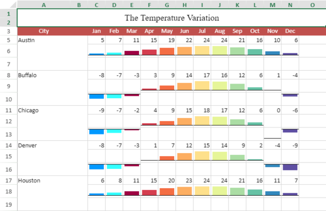

A sparkline is a small chart which can be applied to quickly visualize data and transform it in a compact form in a cell. It uses data from a range of cells to help you easily analyze data at the cell level.
You can set the sparkline type to column, line, or winloss by using setSparkline method or use type-specific formulas to create different sparklines available in SpreadJS.
You can also implement your own logic to define a custom sparkline formula with provided dataset and settings; add that custom sparkline using addSparklineEx method.
The image below shows the Vbar sparkline in action. It shows the trends in the temperature levels across a year in different cities and helps to quickly understand the high and low data points.

You can use the following sparkline types in your spreadsheet. Click on the images to visit the corresponding topics.
Types of Sparklines |
|||
|---|---|---|---|
|
Column Sparkline |
Line Sparkline |
Winloss Sparkline |
Area Sparkline |
|
Pie Sparkline |
Scatter Sparkline |
Bullet Sparkline |
Spread Sparkline |
|
Stacked Sparkline |
Hbar Sparkline |
Vbar Sparkline |
Box Plot Sparkline |
|
Vari Sparkline |
Cascade Sparkline |
Month Sparkline |
Year Sparkline |
|
Pareto Sparkline |
RangeBlock Sparkline |
Histogram Sparkline |
Gauge KPI Sparkline |
|
Image Sparkline |
|||


Grouping Sparklines
You can group and ungroup sparklines by using groupSparkline and ungroupSparkline methods.
Grouping enables you to apply changes to several sparklines all at once and saves time in the process. Grouping also helps to easily compare sparklines by using the same type of sparkline and axis in a group.
| JavaScript |
Copy Code
|
|---|---|
var spread = GC.Spread.Sheets.findControl(document.getElementById('ss')); var sheet = spread.getActiveSheet(); var s1= sheet.setSparkline(13, 0, data , GC.Spread.Sheets.Sparklines.DataOrientation.vertical , GC.Spread.Sheets.Sparklines.SparklineType.line , setting ); var s2 =sheet.setSparkline(13, 3, data , GC.Spread.Sheets.Sparklines.DataOrientation.vertical , GC.Spread.Sheets.Sparklines.SparklineType.column , setting ); var s3= sheet.setSparkline(13, 6, data , GC.Spread.Sheets.Sparklines.DataOrientation.vertical , GC.Spread.Sheets.Sparklines.SparklineType.winloss , setting ); // group sparklines var group = sheet.groupSparkline([s1,s2,s3]); group.sparklineType = GC.Spread.Sheets.Sparklines.SparklineType.column; // ungroup sparklines sheet.ungroupSparkline(group); |
|